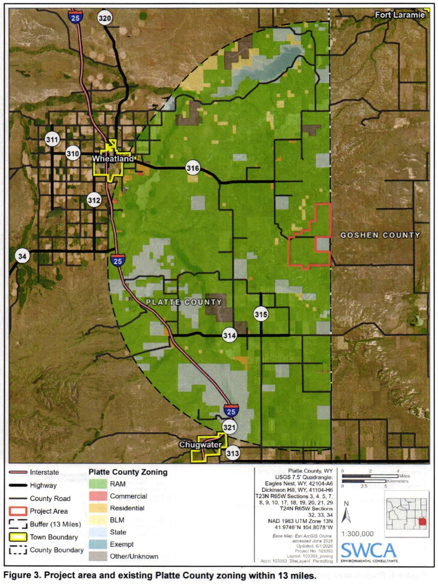

Status, timeline and project context
Detailed evidence behind the short status summary, applicant-described scale, chronology, findings and regional map. Statements retain their review dates and qualifications.
Current status
County zoning — approval reported; final terms still being verified. Contemporaneous reporting describes approval of the 5,344-acre RAM-to-Industrial rezone on September 2. The signed August 26 P&Z recommendation required a Special Use Permit for any development; reporting describes an SUP requirement in the final action. Rezoning changes the land-use classification; it does not itself authorize construction of the campus. The signed commissioner decision, complete final conditions, and owner acceptance have not been verified. (C1; C2; C3; C10; COUNTY-001–005)
County rules — proposed amendments. The posted proposal corroborates P&Z’s September 16 recommendations on data-center SUPs, expansion review, associated generation/storage review, and industrial application information. Recommendation is not final county law. Signed September 16 minutes and a final adoption instrument remain outstanding. See Take action for the commissioner hearing and comment routes. (C4; C5; COUNTY-006–012)
State review — preliminary coordination documented. See State oversight for the dated agency-status statement, the limits of the records search, and the difference between an application waiver and an exemption. (W1, W2, W3; STATE-001–007)
Electric service — general tariff and project commitments are separate. FERC accepted Tri-State’s High-Impact Load Tariff and standard agreement on August 14, subject to a compliance condition, effective July 16, 2026. Tri-State filed revisions September 9; no subsequent acceptance order appeared in the September 20 search of ER26-1929 filings dated September 9–20, with no subdocket restriction. Acceptance remains unverified. The reviewed records do not establish Site Layer 4’s tariff applicability, signed utility contracts, evaluation outcome, or posted security. See Electricity costs and Take action. (E1, E2, E3, E4; ENERGY-001–004,025)
Records — partial evidence, dated findings. The September 16 DEQ release contains eight PDFs. The county acknowledged the records request September 18 and supplied two planner reports. Neither production supplies a verified final commissioner decision or a complete project funding package. See the Request tracker for remaining records and access limits. (C2; C3; C9; W1, W2, W3; COUNTY-030)
Applicant-described scale. The June application covers 5,344 acres in Platte County and describes approximately $26 billion of capital investment. The February DEQ introduction describes approximately 6,339 acres across Platte and Goshen counties. These are different stated geographic scopes. The investment estimate is not assessed value, guaranteed tax revenue, a financing commitment, or an impact-assistance award. (C13, PDF p. 8; W1, p. 1)
County hearing moved to October 20, 2026, at 1 p.m. MDT. The updated county notice was checked September 23. Federal participation was last checked September 21; the September 9–21 docket search returned the existing filing and notice only. Sources, search boundary and remaining limits →
What happened when
| Date | Event and evidence |
|---|---|
| February 11, 2026 | SWCA requested air-permitting/modeling guidance and a pre-application meeting on behalf of Granite Renewables for Site Layer 4. This was a consultant request, not an approval. (W2, p. 2) |
| February 18, 2026 | SWCA introduced Site Layer 4 to DEQ, describing approximately 6,339 acres across Platte/Goshen, a proposed mix of facilities, the ≤800-acre-foot cooling assumption, and an intention to apply for an ISA permit. (W1, p. 1) |
| March 11 and May 13, 2026 | The preserved September 16 agency response reports an all-divisions meeting and a pre-jurisdiction meeting, respectively. The original status-message delivery and later updates remain unrefreshed. W3 |
| June 2026 | The county application narrative sought rezoning for 5,344 Platte County acres. Its water section anticipates less than 15 acre-feet annually. The precise intake date is not certified here; do not use the old June 26 label as a newly verified filing date. (C13, pp. 6–8,34) |
| August 26, 2026 | Signed P&Z minutes recommend rezoning with noncommencement/permanent-decommissioning reversion, subdivision/preliminary-plan review, and an SUP for any development. Read the full motion in the signed minutes. (C1, pp. 2–3) |
| September 2, 2026 | Reporting describes commissioner approval with four conditions. Final signed terms and owner acceptance remain retrieval targets. See Current status. The report’s present byline is September 3 even though its URL includes September 2. (C10; C2) |
| September 16, 2026 | DEQ released the eight-PDF ISD production and the separately preserved status response. P&Z recommended countywide rule changes; the posted proposal corroborates the substantive changes. (W1, W2, W3; C4, C5) |
| September 17, 2026 | County published the commissioner-hearing notice. Current logistics live in Take action. C6 |
| September 18, 2026 | County supplied two planner reports and acknowledged the records request. The utility research log records its dated filing-package comparison and docket-search observation. (C9; dated energy review) |
| September 20, 2026 | County, state/water and energy evidence was reviewed together. Missing instruments and access limits remain explicit. |
Key findings
01
Unresolved / evidence limits
Unreconciled water descriptions
Applicant statements • scope unresolved
The June 2026 county application anticipates less than 15 acre-feet of water annually. A February 18 email to DEQ assumes closed-loop cooling using no more than 800 acre-feet of state waters annually. The documents do not establish common phase, geographic, source or use boundaries, or distinguish total withdrawals from consumptive losses. The June cooling discussion also describes initial fill from a commercial supplier, on-site wells for drinking/sanitary use, and additional project uses. Their accounting needs clarification. (C13, §2.6, PDF p. 34/printed p. 22; W1, p. 1)
Both numerical statements could be true; a value below 15 is also below 800. Neither is established here as a binding whole-project maximum. “Shall not exceed” can express an enforceable cap when scope, measurement, authority and incorporation into a binding instrument are established. The unresolved issue is the water budget and legal obligation, not those words. See Water scorecard W01–W11 and State oversight for the separate statutory review trigger. [WATER-001–009]
02
Unresolved / evidence limits
Documented roles
The applicant and contacts are identified in filings; ultimate ownership, end-user and operators remain unresolved. See Who would own and operate the campus? for the documented roles and source pages.
03
Applicant statement
Proposed components
The applicant describes gas generation, solar, battery storage, a data center and ancillary facilities. Those descriptions do not establish final component capacities, a complete phased design, grid isolation, or issued permits. See E03–E11 and G10. (W1, p. 1; C13, p. 8)
04
Applicant statement
Preliminary air assessment
In February correspondence, SWCA said preliminary emissions estimates indicated PSD review for most PSD pollutants. This is the consultant’s preliminary assessment, not a permit determination. The reviewed correspondence does not supply the emissions inventory or final limits. See O06. (W2, p. 2)
05
Direct record
Consultant request
The consultant asked for guidance that might expedite permitting. The produced correspondence records that request and process discussions; it does not establish an agency promise of accelerated review or approval. (W2, pp. 1–9, especially p. 2)
06
Unresolved / evidence limits
Production limits
The eight-PDF ISD production contains introductions, scheduling and standard guidance. The project presentation, meeting notes and detailed technical/jurisdictional records remain retrieval targets. This is a limit of the reviewed production, not proof of improper withholding. See the Request tracker. (W1, W2, W3; state bounded-search record)
07
Unresolved / evidence limits
County status
For the distinction between the reported zoning action and project approvals, see Current status. The signed August recommendation and later reporting remain available in the timeline.
08
Unresolved / evidence limits
State route
The legal route determines which state protections apply. See State oversight for the current evidence boundary and the protection-by-protection explanation.
09
Unresolved / evidence limits
Public-service funding
In the September 18 reply to item 3 of the September 15 county records request, the clerk reported that no agreements had been entered into at that time. The planner reports anticipate road and emergency-management review; they do not supply a complete signed, secured funding package. This does not establish the status of private utility agreements, every draft, or later agreements. Limited C2/C3 report excerpts and the C9 item-3 response excerpt are available with provenance, qualifications and omission notices; complete originals are not reproduced. See F01–F05 and the funding research note. (C2, C3, p. 3; C9)
From the county application · Figures 2–3
Project area and location
The red outline is the project area shown in the applicant’s rezoning maps. Start with the regional view to locate it southeast of Wheatland, then open the detail view to see the outline and nearby roads.
Regional view: Figure 3, PDF page 16. Dashed line: 13-mile context buffer.

Zoom to read the original labels and legend. Keyboard: Tab to a view button and press Enter; focus the map to pan with arrow keys or zoom with + / −. Reset restores the complete figure.
Read the source maps
Red outline: project areaThe area depicted in this application—not a surveyed construction footprint or a final approval instrument.
Black dashes: context bufferFigure 2 shows 2 miles; Figure 3 shows 13 miles. These are not project boundaries, setbacks or predicted impact zones.
Background colors: source legendThe figures show the application’s existing-zoning context. The green shading is not the proposed development area.
Source: SWCA, Site Layer 4 Project Rezoning Application for Platte County, Wyoming, June 2026, Figure 2, PDF page 15 (new tab) and Figure 3, PDF page 16 (new tab) (printed pages 3–4). Figure legends credit Esri ArcGIS Online imagery and identify NAD 1983 UTM Zone 13N. These are reproductions of the applicant’s maps, not new surveys or live GIS layers. Original legends, scale bars and attribution are retained; page margins are omitted.
The earlier estimated circles and schematic connecting lines are no longer used in this viewer. These figures do not map a Chugwater Energy boundary or establish shared utility connections. Its permit notice remains available below. Verified infrastructure routes and final project boundaries remain separate research questions.
Site Layer 4
County legal description →Rezoning approval reported; final conditions and project permits require verification—see Current status.
Chugwater Energy
Approximately 300 MW wind, 150 MW solar, and 150 MW four-hour battery storage east of Chugwater. The state identifies access via Slater Road/WY 314, Lone Tree Road/WY 313, and East Bear Creek/Windmill Road.
State permit notice →The cumulative picture is incomplete
- High-voltage lines, interconnection points, and substations
- Natural-gas pipeline routes and fuel facilities
- Wells, aquifers, water rights, and modeled drawdown
- Fire, EMS, law-enforcement, and evacuation service areas
- Construction traffic routes, road capacity, and cost agreements
- Project phases, ownership, shared contractors, and schedules
The map’s working question:
Which roads, utilities, water systems, emergency services, airsheds, and public budgets would carry impacts from more than one project at the same time?